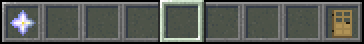
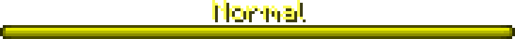
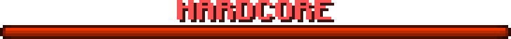
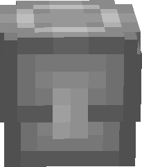
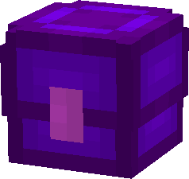
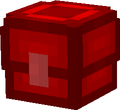

How the game is played and in which order what happens
WARNING! This plugin is under heavy development so some features listed on this site may not be already ingame or bugged!
Phases in the game
Lobby
The lobby is the place where you wait for other players to start a game together
To join the lobby you just have to get teleported into a world, which is set in the config.
(by default it's set to 'lobby')
When you've joined the lobby you will notice that there are two items in your hotbar:



On the top of your screen will be a bossbar showing which gamemode is currently choosen.
You'll need at least two players to play the game but with more players it's more fun. The maximum
amount of players per game is by default set to 16 but theoretically infinite.
The waiting time in the lobby depends on how many players are in it (more players = shorter
waiting time). OP's can use the /skip command to set the remaining time directly to 5 seconds.
Ingame
This section covers all things which can happen during the game
Once you have been teleported into the random choosen arena all players will be dived
into four teams (Default: Red, Blue, Yellow,
Green).
If there aren't at least four players some teams will be empty.
In normal mode you will have three lifes. In the HARDCORE mode just one! Other
differences
between the modes is the damage: In the normal mode fall- and firedamage is
disabled other
than in HARDCORE mode. In addition, damage from all sources is doubled in HARDCORE mode!



Every 10 seconds one item will spawn in the area. Currently there are three possible items.
(Silver box, purple box, red box)
By optaining them you have a random chance to get an item. Each box has an base amount of
luck. The higher the luck, the better the item. (Silver has the lowest luck and red the highest)
TIP: You can manually spawn
a box by typing
/spawnbox 10(silver)|85(purple)|100(red) (the box will spawn two blocks below you)
Ending
This, last, area is dedicated to everything which happens after the game